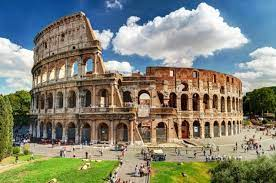

Ciao Sono Simone Panfili, ho 16 anni, vivo a Reggio Nell'Emilia, frequento il Bus Pascal, sezione informatico e faccio palestra per diventare più grosso, al bus ho imparato per ora c++ e adesso sto imparando a fare i siti con html tipo questo.
LE SCIMMIE
Il mio animale preferito è la scimmia, è un animale fantastico e secondo me molto sottovalutato.
CLICCA QUI SE VUOI SAPERE PIU DELLLE SCIMMIE

EL FUTBOL
Un'altra mia passione è il calcio, io tifo la juventus e il mio calciatore preferito è Cristiano Ronaldo (CR7), anche se ha lasciato la mia squadra del cuore poco tempo fa per andare al Manchester United.
CLICCA QUI SE VUOI SAPERE PIU DI CRISTIANO RONALDO
VIDEOGAMES
I videogames mi piacciono molto ed essendo che mi piace il calcio gioco a fifa.
CLICCA QUI SE VUOI SAPERE PIU SUI VIDEOGAMES
LO STREETWEAR E LE SNEAKERS
Mi piacciono molto i vestiti, in particolare lo stile streetwear e le sneakers.
CLICCA QUI SE VUOI SAPERE DI PIU SU TRAVIS SCOTT
IL MIO POSTO PREFERITO:
CLICCA QUI SE VUOI SAPERE DI PIU SUL COLOSSEO
{kind=link}